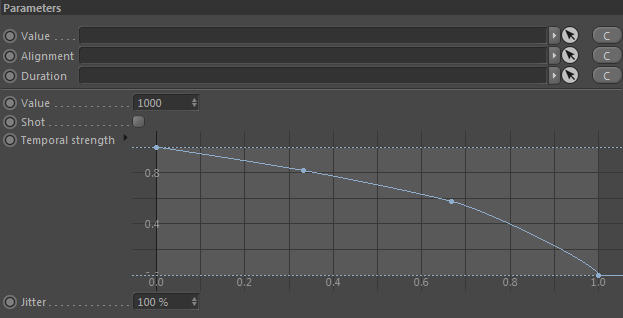
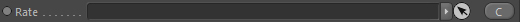
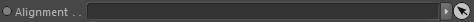
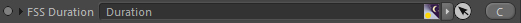
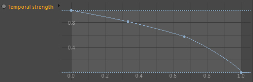
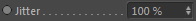

Parameters
Parameters

Value

Takes a node of type Value and is the setting for an emission rate.
This node is optional (and is of no use for a Particle Grid Emitter), you can use it in a Particle On Mesh Emitter to define the exact amount of particles.
Alignment

Takes a node of type Alignment. It is used currently only used for emitting Vorticity particles to initialise their vorticity direction property when they are born.
Duration

Takes a duration node that defines how long the node (that is using these emission settings) is operating. This node is optional.
Value

The emission value if no Value node is linked. Has no effect in an Emitter::Particle In Volume.
However for Emitter::Particle On Mesh you can define the exact amount of particles generated for example.
Shot
Shot will enforce that the emitter using these settings will emit the particles directly and not time integrated (not based on the current sub time step).
So deactivated the particle count is emitted per second and if activated per frame.
Temporal Strength

Only available if a Duration node is linked. Allows to define the particle count strength in the range of the duration sequence.
Jitter

Jitters the particles randomly to make their distribution more irregular (this can be beneficial in a liquid simulation).
100% means full jiterring intensity, 0% means the particles are placed ordered (in a regular fashion).